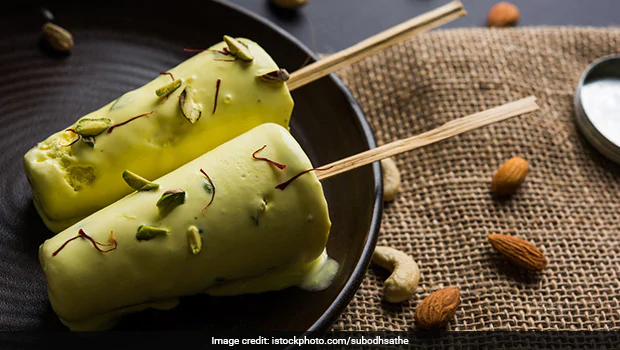

Kulfi

Kulfi
This is a simple but delicious recipe for Kulfi (Indian Ice Cream) that I got from my sister-in-law. I have made this several times, and it always gets rave reviews - even the kids love it! For extra flavor, you could add a few drops of rose water or ground pistachios.
Ingredients
- 1 ¼ cups evaporated milk
- 1 ¼ cups sweetened condensed milk
- 1 (16 ounce) container frozen whipped topping, thawed
- 4 slices white bread, torn into pieces
- ½ teaspoon ground cardamom
Steps
- Combine evaporated milk, condensed milk and whipped topping in a blender and blend in pieces of bread until smooth.
- Pour mixture into a 9x13 inch baking dish or two plastic ice cube trays, sprinkle with cardamom and freeze for 8 hours or overnight.